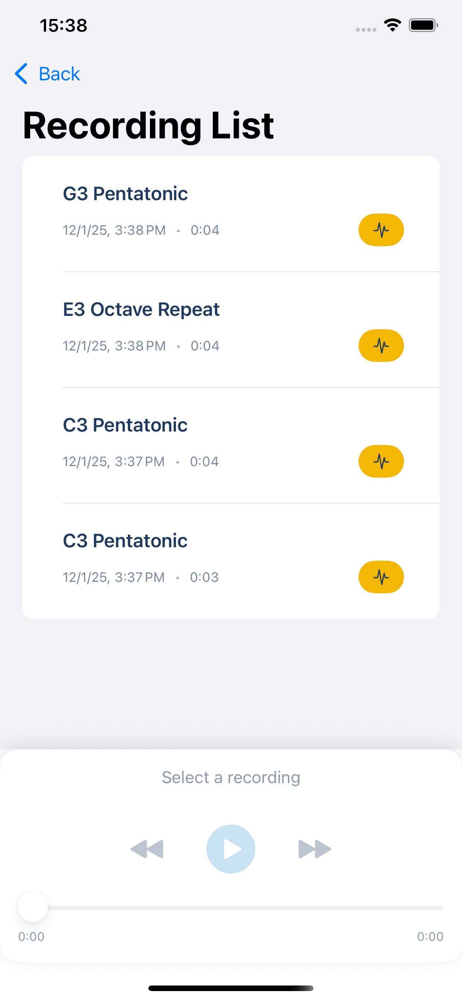
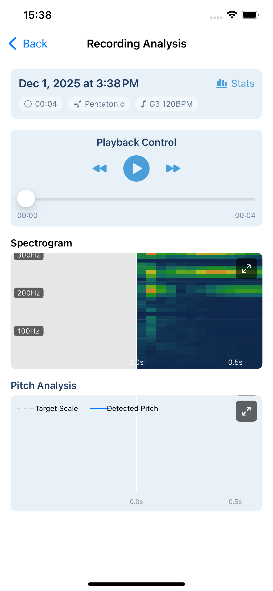
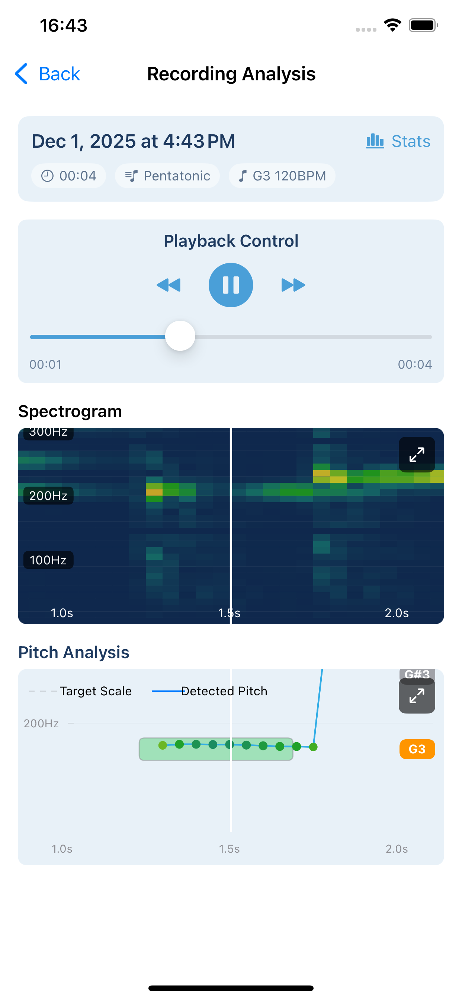

SCREENSHOTS
Your practice flow, exactly as designed.
From recording to list to analysis — intuitive navigation throughout.
Recording List
Auto-organized with date, key, and scale info. Select and play or analyze instantly.

Recording Analysis
View the difference between target scale and detected pitch with spectrogram and pitch graph.
 